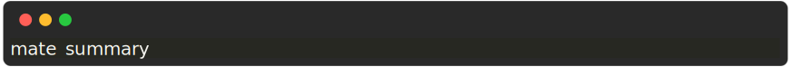
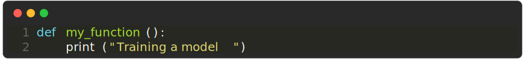
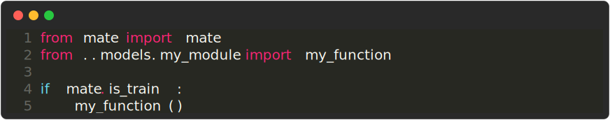

Mate project from scratch
This is a step by step guide to create a new project from scratch.
1 Create a new project
Make sure you’re inside a git repository and run the following command:

This will do the following:
-
Create a new folder called
new_project, with inside the default folder structure - Create a virtual environment. This will be used to install all the dependencies
To make sure everything worked, first navigate inside the
new_project folder:

Then run:

2 Create a your first module
Make sure you’re still inside the new_project folder and run
the following command:

Now run again:
Now let’s add some code to our module. Create a new file
models/my_module/main.py with your favorite editor and add the
following code:

Then export the function to the __init__.py file by running:

3 Create your first experiment
Now let’s create an experiment. Run the following command:

Then edit the file experiments/my_experiment.py

4 Run your experiment
Now let’s run the experiment. Run the following command:

You should see Training a model printed in the console. Hurrah!
You just created your first project with mate!